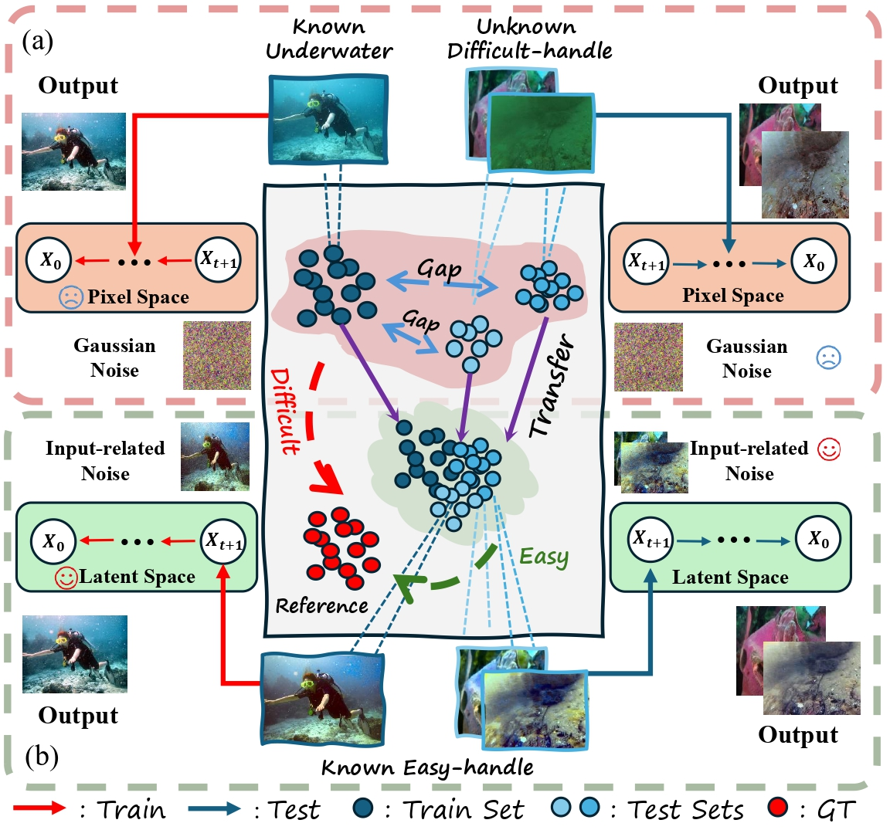
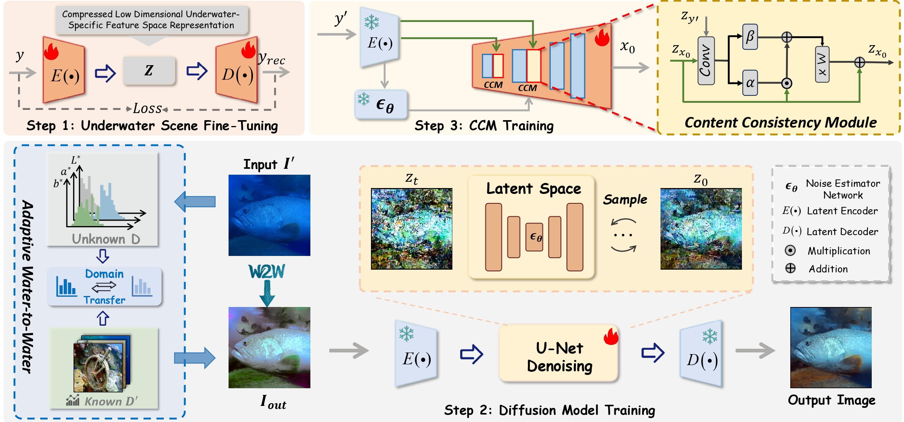

W2WDiff introduces an unsupervised water-to-water transformation to bridge domain gaps, followed by latent-space diffusion with a custom Markov chain and Content Consistency Module (CCM). This design achieves superior generalization, stable enhancement, and efficient sampling across diverse underwater conditions.
🔥 A More Generalizable UIE Method 🔥
Abstract
Underwater image enhancement (UIE) is essential for underwater information acquisition across marine science and ocean remote sensing. Diffusion-based UIE methods demonstrate remarkable enhancement capabilities but suffer significant performance degradation when test-time observations diverge from training-time assumptions. Moreover, the inherent stochasticity of the diffusion process often manifests as inconsistent and unstable enhancement results, compromising both reproducibility and quality assurance. To address these limitations, we propose W2WDiff, a novel framework that introduces an unsupervised water-to-water transformation strategy. By mapping heterogeneous underwater degradations to a tractable intermediate domain, our method circumvents the distribution shift problem inherent in direct enhancement approaches, achieving superior generalization across diverse underwater scenarios. In contrast to general pixel-space methods, we establish the feasibility of latent-space UIE and introduce a corresponding diffusion paradigm. Our approach introduces a custom Markov chain specifically designed for underwater characteristics, achieving substantial reductions in sampling steps while mitigating color distortion. Furthermore, we propose a three-stage training scheme along with a Content Consistency Module (CCM) to mitigate pixel-level misalignment and enhance local structural fidelity and detail preservation. Comprehensive experiments demonstrate that W2WDiff achieves consistent and robust enhancement across a wide range of challenging underwater conditions, exhibiting strong zero-shot generalization performance.
Motivation

Comparison between Previous Diffusion-Based UIE Models and Our W2WDiff Framework.
(a) General diffusion-based UIE models directly learn a supervised mapping from the underwater degradation domain D to the reference domain R, often struggling with domain shifts across different datasets.
(b) Our proposed W2WDiff framework introduces an unsupervised water-to-water transformation, which first maps the original underwater domain D to an intermediate, more tractable underwater domain D'. This common underwater space bridges the distribution gap between diverse training and testing datasets, ensuring more effective adaptation. A diffusion model is then employed to reconstruct the reference domain R from D'. By leveraging this intermediate transformation, our approach mitigates domain mismatches and enhances zero-shot generalization across various underwater environments.
Method

To achieve effective underwater image enhancement while maintaining content consistency and avoiding hallucination artifacts, we propose a three-stage training framework that progressively adapts and optimizes each component for UIE. The framework consists of:
⚙️Stage 1: Autoencoder Fine-tuning. Adapts the latent space representation for underwater-specific features, ensuring effective compression and feature extraction.
🌊Stage 2: Diffusion Model Training. Learns underwater-specific degradation patterns in the adapted latent space, enabling robust restoration.
This staged approach ensures stable integration and optimal performance of each component. The complete training pipeline is followed by an efficient sampling strategy that enables few-step inference.
More Visual Comparisons
In this section, we present additional qualitative results that could not be included in the main paper due to space limitations.
Specifically, visualizations on the out-of-distribution EUVP , U45 and UCCS datasets demonstrate the strong generalization capability of our method.
Moreover, comparisons on the more challenging C60 dataset reveal that our approach consistently yields superior visual results compared to existing methods.
Visual comparisons on the challenging C60 dataset. Our method achieves superior visual enhancement under extremely adverse conditions, including low-light environments, compound degradation types, and turbid water. The results demonstrate robust detail preservation and effective color correction, validating the method capability in real-world, high-complexity underwater scenarios.
Generalization performance on out-of-distribution datasets EUVP and U45. Compared with baseline and diffusion-based methods, our approach exhibits strong generalization and robustness across diverse domains. It effectively enhances distant regions, seabed textures, and areas with scattered sediments, features typically overlooked by existing methods, demonstrating its adaptability to varying underwater distributions.
Enhancement consistency on the UCCS dataset. Our method maintains consistent enhancement across frames, addressing the stochasticity and semantic instability commonly observed in diffusion-based UIE methods. This consistency is particularly critical for video-based applications, underscoring the reliability and temporal stability of our framework.
BibTeX
📋 Citation
@ARTICLE{11230813,
author={Zhang, Yuanlin and Yuan, Jieyu and Chen, Xiao and Tang, Xiongxin and Chen, Qiao and Wang, Yiquan and Li, Chongyi},
journal={IEEE Transactions on Geoscience and Remote Sensing},
title={W2WDiff: Generalizing Underwater Diffusion Model via Unsupervised Underwater Conversion},
year={2025},
doi={10.1109/TGRS.2025.3629979}
}